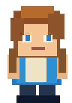
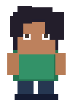
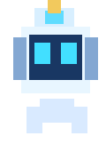

⌛ AI TIME TRAVELER
Уақыттың құпиясы · Pixel Art шытырман ойыны
Уақыт машинасы
⚙️ Ойын параметрлері
Бастапқы ресурстарды өзгертіп, AI шешімдерінің қалай өзгеретінін зертте. 0–100 аралығы.
AI TIME TRAVELER
УАҚЫТТЫҢ ҚҰПИЯСЫ
УАҚЫТТЫҢ ҚҰПИЯСЫ
Хроно: «Айдар, уақыт машинасы бұзылды! Үш дәуірге сапар шегіп, уақыт сызығын құтқарайық!»

АйдарСаяхатшы

ӘлиДосы

ХроноAI көмекші
Хроно: Алға!
Уақыт порталы
Қандай шешім қабылдайсың?
Хрононың ұсынысын және күтілетін пайданы салыстыр. Нәтиже ықтималдық моделі бойынша анықталады.
🤖 Intelligent Agent (1-апта)
Агент жағдайды бақылап, ереже бойынша ұсыныс береді.
⚖️ Decision-Making (8-апта)
Әр шешімнің ықтимал нәтижелері бойынша күтілетін пайда есептеледі.